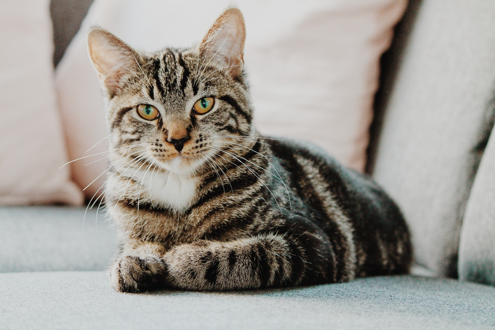
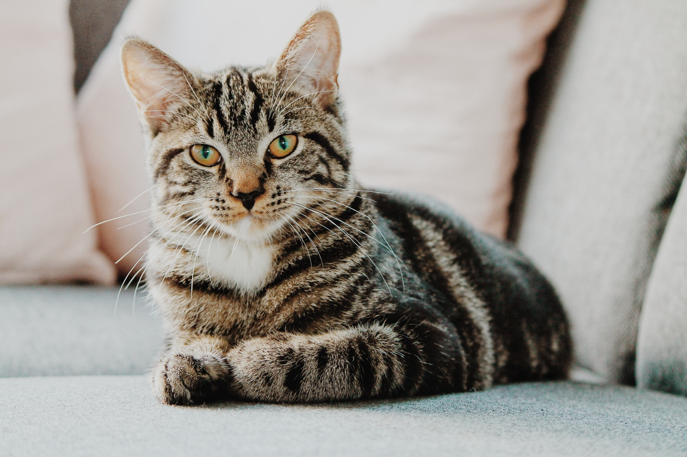

Projekt 1
Cat
Where do cats live?
Cats live in areas of human habitation and in developed areas.
What do cats eat?
- Meat
- Whole grains
- Fish
- Eggs
- Cheese
More info and photos
 The cat is a domestic species of small carnivorous mammal. A cat can be a house cat or a farm cat. Cats are valued by humans for their ability to kill rodents. Cats have a strong flexible body, quick reflexes and sharp teeth. Its night vision and sense of smell are well developed. Cat communication includes vocalizations and a cat-specific body language. Cats can hear sounds that are to high on frequency for human ears. The cat's hearing is most acute in the range of 500 Hz to 32 kHz. Their body language, including position of ears and tail, relaxation of the whole body, and kneading of the paws, are all indicators of mood.
The cat is a domestic species of small carnivorous mammal. A cat can be a house cat or a farm cat. Cats are valued by humans for their ability to kill rodents. Cats have a strong flexible body, quick reflexes and sharp teeth. Its night vision and sense of smell are well developed. Cat communication includes vocalizations and a cat-specific body language. Cats can hear sounds that are to high on frequency for human ears. The cat's hearing is most acute in the range of 500 Hz to 32 kHz. Their body language, including position of ears and tail, relaxation of the whole body, and kneading of the paws, are all indicators of mood.
Interesting videos
Documentary
A day in life of the cat
Made by Glejdi